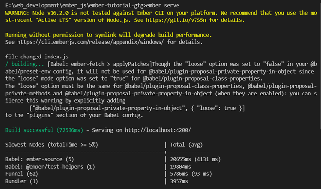
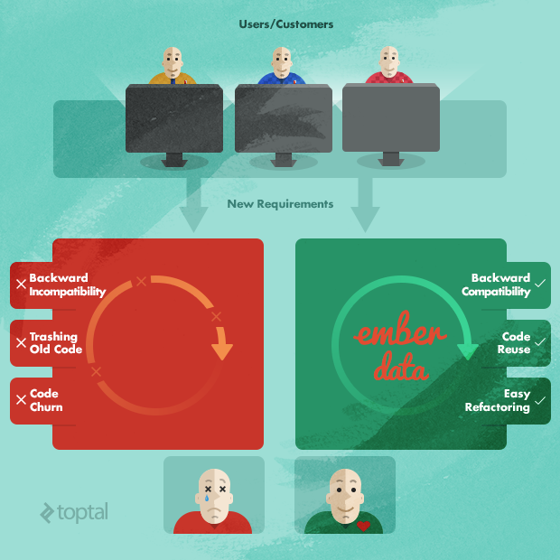

Pila de software de Ember.js
- CLI de Ember
- Ember Data
- Stake Inspector
- Fastboot
- Liquid Fire
CLI de Ember
Ember-cli tiene como objetivo traer la convención sobre la configuración para construir herramientas. Una utilidad de línea de comandos basada en Broccoli, ejecutar el comando ember new "nombre de la aplicación" genera una nueva aplicación Ember con la pila predeterminada. Esto proporciona:
- Una estructura estándar de archivos y directorios.
- Servidor de desarrollo con recarga en vivo.
- Un marco de prueba.
- Dependencias administradas a través de npm.
- Soporte de sintaxis ES6/ES7+ (usando Babel).
- Gestión de activos (incluida la combinación, la minimización y el control de versiones).
- Blueprints, que son generadores de código para crear modelos, controladores, componentes, etc., que se necesitan en una aplicación. También se pueden crear planos personalizados
- Complementos que brindan la capacidad de ampliar las funciones de Ember CLI. Los complementos se pueden instalar escribiendo ember install "nombre del complemento". Actualmente hay disponibles más de dos mil complementos, incluidos complementos para CoffeeScript , LESS , Sass , Compass y Mocha .
Ember Data
La mayoría de las aplicaciones de Ember utilizan Ember Data, una biblioteca de persistencia de datos que proporciona muchas de las funciones de un mapeo relacional de objetos (ORM). Sin embargo, también es posible usar Ember sin Ember Data. Ember Data asigna modelos del lado del cliente a datos del lado del servidor. Luego puede cargar y guardar registros y sus relaciones sin ninguna configuración a través de una API RESTful JSON que implementa la especificación de la API JSON, siempre que se sigan ciertas convenciones. Sin embargo, también es configurable y puede funcionar con servidores mediante el uso de adaptadores y complementos. La API JSON tiene implementaciones de biblioteca de servidor para PHP , Node.js , Ruby , Python , Go , .NET y Java.Conexión a un Java - SpringTambién se documenta el servidor basado en. La primera versión estable de Ember Data (etiquetada como 1.13 para alinearse con la propia Ember) se lanzó el 18 de junio de 2015.
Stake Inspector
Ember Inspector es una extensión actualmente disponible para los navegadores web Mozilla Firefox y Google Chrome para depurar aplicaciones Ember. Las características incluyen la capacidad de ver qué plantillas, componentes y vistas se representan actualmente, ver las propiedades de cualquier objeto Ember con una interfaz de usuario que calcula los enlaces y las propiedades calculadas, y acceder a los objetos de la aplicación desde la consola. Si se utilizan Ember Data, también se pueden ver los registros cargados para cada modelo.
- El Inspector de objetos permite ver y editar el contenido del tiempo de ejecución de los objetos y clases de Ember.
- El árbol de vistas muestra visualmente la estructura de la aplicación Ember renderizada.
- La pestaña Rutas permite determinar y seguir el estado del enrutador y las direcciones URL utilizadas para representar las rutas.
- La pestaña Datos puede mostrar los modelos en la aplicación y los registros cargados para cada modelo.
- La pestaña Información muestra las versiones de dependencia.
- La pestaña Obsolescencia permite obtener seguimientos de pila de advertencias de obsolescencia que no desencadenan excepciones.
- La pestaña Promesas permite rastrear el código a través de operaciones asincrónicas.
- La pestaña Contenedor se utiliza para comprobar qué objetos se han cargado.
- La pestaña Render Performance es para determinar qué está ralentizando una aplicación Ember.
Fastboot
Fastboot es un complemento de Ember CLI creado por el equipo central de Ember que brinda a los desarrolladores de Ember la capacidad de ejecutar sus aplicaciones en Node.js. Esta función permite a los usuarios finales ver HTML y CSS de inmediato, con la descarga de JavaScript en segundo plano y tomando el control una vez que se haya cargado por completo.
Liquid Fire
Liquid Fire proporciona soporte de animación para aplicaciones Ember. Las características incluyen transiciones animadas entre rutas y entre modelos dentro de una sola ruta. Proporciona un DSL para solidificar las relaciones de rutas espaciales, claramente separado de los detalles de implementación de la capa de visualización. Un ejemplo sería animar una transición de pantalla para que la nueva pantalla parezca deslizarse desde un borde del navegador.